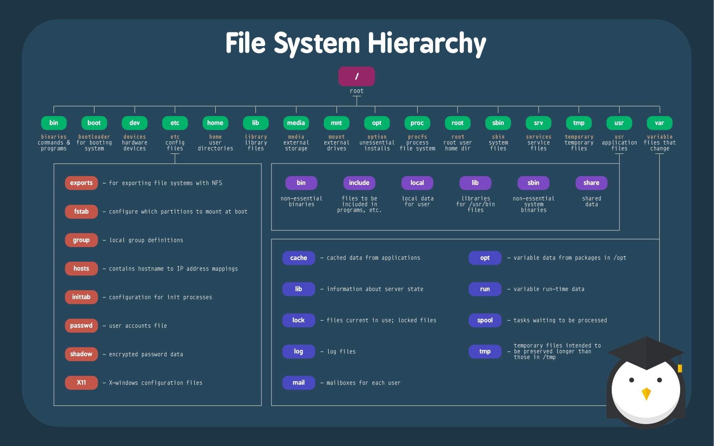

Linux文件系统结构图
Category: 技术学习 | Tags: linux | Source: Markdown ----------> Back to Wiki

| 目录 | 描述 |
|---|---|
| / | 主层次 的根，也是整个文件系统层次结构的根目录。 |
| /bin | 存放在单用户模式可用的必要命令二进制文件，所有用户都可用，如 cat、ls、cp等等。 |
| /boot | 存放引导加载程序文件，例如kernels、initrd等。 |
| /dev | 存放必要的设备文件，例如/dev/null。 |
| /etc | 存放主机特定的系统级配置文件。其实这里有个关于它名字本身意义上的的争议。在贝尔实验室的UNIX实施文档的早期版本中，/etc表示是“其他（etcetera）目录”，因为从历史上看，这个目录是存放各种不属于其他目录的文件（然而，文件系统目录标准 FSH 限定 /etc 用于存放静态配置文件，这里不该存有二进制文件）。早期文档出版后，这个目录名又重新定义成不同的形式。近期的解释中包含着诸如“可编辑文本配置”或者“额外的工具箱”这样的重定义。 |
| /etc/opt | 存储着新增包的配置文件 /opt/。 |
| /etc/sgml | 存放配置文件，比如 catalogs，用于那些处理SGML(译者注：标准通用标记语言)的软件的配置文件。 |
| /etc/X11 | X Window 系统11版本的的配置文件。 |
| /etc/xml | 配置文件，比如catalogs，用于那些处理XML(译者注：可扩展标记语言)的软件的配置文件。 |
| /home | 用户的主目录，包括保存的文件，个人配置，等等。 |
| /lib | /bin/ 和 /sbin/中的二进制文件的必需的库文件。 |
| /lib<32/64> | 备用格式的必要的库文件。 这样的目录是可选的，但如果他们存在的话肯定是有需要用到它们的程序。 |
| /media | 可移动的多媒体(如CD-ROMs)的挂载点。 |
| /mnt | 临时挂载的文件系统。 |
| /opt | 可选的应用程序软件包。 |
| /proc | 以文件形式提供进程以及内核信息的虚拟文件系统，在Linux中，对应进程文件系统（procfs）的挂载点。 |
| /root | 根用户的主目录。 |
| /sbin | 必要的系统级二进制文件，比如， init, ip, mount。 |
| /srv | 系统提供的站点特定数据。 |
| /tmp | 临时文件 (另见 /var/tmp). 通常在系统重启后删除。 |
| /usr | 二级层级存储用户的只读数据； 包含(多)用户主要的公共文件以及应用程序。 |
| /usr/bin | 非必要的命令二进制文件 (在单用户模式中不需要用到的)；用于所有用户。 |
| /usr/include | 标准的包含文件。 |
| /usr/lib | 库文件，用于/usr/bin/ 和 /usr/sbin/中的二进制文件。 |
| /usr/lib<32/64> | 备用格式库(可选的)。 |
| /usr/local | 三级层次 用于本地数据，具体到该主机上的。通常会有下一个子目录, 比如, bin/, lib/, share/。 |
| /usr/local/sbin | 非必要系统的二进制文件，比如用于不同网络服务的守护进程。 |
| /usr/share | 架构无关的 (共享) 数据。 |
| /usr/src | 源代码，比如内核源文件以及与它相关的头文件。 |
| /usr/X11R6 | X Window系统，版本号:11，发行版本：6。 |
| /var | 各式各样的（Variable）文件，一些随着系统常规操作而持续改变的文件就放在这里，比如日志文件，脱机文件，还有临时的电子邮件文件。 |
| /var/cache | 应用程序缓存数据. 这些数据是由耗时的I/O(输入/输出)的或者是运算本地生成的结果。这些应用程序是可以重新生成或者恢复数据的。当没有数据丢失的时候，可以删除缓存文件。 |
| /var/lib | 状态信息。这些信息随着程序的运行而不停地改变，比如，数据库，软件包系统的元数据等等。 |
| /var/lock | 锁文件。这些文件用于跟踪正在使用的资源。 |
| /var/log | 日志文件。包含各种日志。 |
| /var/mail | 内含用户邮箱的相关文件。 |
| /var/opt | 来自附加包的各种数据都会存储在 /var/opt/。 |
| /var/run | 存放当前系统上次启动以来的相关信息，例如当前登入的用户以及当前运行的daemons(守护进程)。 |
| /var/spool | 该spool主要用于存放将要被处理的任务，比如打印队列以及邮件外发队列。 |
| /var/mail | 过时的位置，用于放置用户邮箱文件。 |
| /var/tmp | 存放重启后保留的临时文件。 |
Author: qianngchn | Date: 2016-04-23 ----------> Go to Top